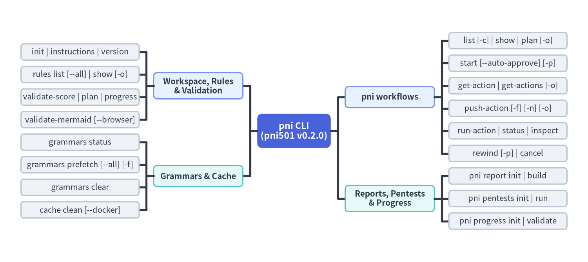

ルール拡張と CLI リファレンス
pni501（v0.2.0）は、55 言語（および generic フォールバック）にわたり、全 356 個の組み込み Markdown ルールファイル・182 個のアクションテンプレート・112 個のワークフローテンプレート・40 個のコンテナハーネス Dockerfile を同梱しています。ワークスペース固有のカスタマイズは決定論的な .pni/ ローカルオーバーライドカスケードで解決され、すべてのライフサイクル操作を統合 pni CLI から実行できます。

Source Code
from drawlib.canvas import save, setup
from drawlib.icons import phosphor
from drawlib.smartarts import CardList, Panel
from drawlib.styles import Styles
setup(width=184, height=86, dpi=150)
tax_panel = Panel(
"1. Built-in Catalog (356 Rules | 182 Actions | 112 WFs)",
header_variant="filled",
header_height=8.5,
style=Styles.Neutral.patch(shape_r=2.0),
header_style=Styles.PrimaryFlat,
text_style=Styles.WhiteBold.patch(text_size=10.8),
)
tax_panel.draw(xy=(4.0, 4.0), width=85.5, height=78.0)
tax_cards = CardList(
style=Styles.WhiteBordered.patch(shape_r=1.5),
text_style=Styles.DarkBold.patch(text_size=10.6),
description_style=Styles.Dark.patch(text_size=10.0),
badge_shape="rounded_rect",
badge_style=Styles.PrimaryNeutral,
badge_text_style=Styles.PrimaryBold.patch(text_size=10.0),
icon_style=Styles.PrimaryBold,
direction="vertical",
spacing=2.8,
)
tax_cards.add(
"Universal Standards & Guides (common/*)",
"12 evaluation rules (Arch, SIG, OpenSSF, OWASP,\n"
"12-Factor, SRE, CLI, Library) + 4 meta-guides\n"
"(agent_instruction, workflow/migration/progress)",
badge_text="16",
icon=phosphor.globe,
)
tax_cards.add(
"55 Languages + Generic (<lang>/*)",
"code_quality, typing, dependencies, testing,\n"
"modern_stack, workflow_guide across all 55\n"
"Tier A/B/C languages + generic fallback (56 x 6)",
badge_text="336",
icon=phosphor.code,
)
tax_cards.add(
"Framework Rules (<lang>/frameworks/*)",
"python/frameworks/fastapi, java/frameworks/\n"
"spring_boot, php/frameworks/laravel, and\n"
"php/frameworks/wordpress",
badge_text="4",
icon=phosphor.stack,
)
tax_cards.draw(xy=(6.5, 6.5), width=80.5, height=64.5)
cas_panel = Panel(
"2. Local .pni/ Override & Waiver Cascade",
header_variant="filled",
header_height=8.5,
style=Styles.PrimaryNeutral.patch(shape_r=2.0),
header_style=Styles.SecondaryFlat,
text_style=Styles.WhiteBold.patch(text_size=10.8),
)
cas_panel.draw(xy=(94.5, 4.0), width=85.5, height=78.0)
cas_cards = CardList(
style=Styles.WhiteBordered.patch(shape_r=1.5),
text_style=Styles.DarkBold.patch(text_size=10.6),
description_style=Styles.Dark.patch(text_size=10.0),
badge_shape="rounded_rect",
badge_style=Styles.SecondaryNeutral,
badge_text_style=Styles.SecondaryBold.patch(text_size=10.0),
icon_style=Styles.SecondaryBold,
direction="vertical",
spacing=2.8,
)
cas_cards.add(
"Priority 1: Local .pni/ Workspace Files",
".pni/rules/<scope>/<name>.md, .pni/actions/*.yaml,\n"
".pni/dockerfiles/, and .pni/instructions.md\n"
"automatically shadow built-in package defaults",
badge_text="P1",
icon=phosphor.folder_open,
badge_style=Styles.PrimaryFlat,
badge_text_style=Styles.WhiteBold.patch(text_size=10.0),
icon_style=Styles.WhiteBold,
)
cas_cards.add(
"Priority 2: Active Language Scope (<lang>/*)",
"Short names (e.g. 'pni rules show testing' or\n"
"'repo_structure_audit') resolve to the active\n"
"language before falling back to common/*",
badge_text="P2",
icon=phosphor.magnifying_glass,
)
cas_cards.add(
"Priority 3: Built-in common/* & [[opt_out]]",
"Canonical src/pni/_rules/ fallback paired with\n"
"declarative .pni/pni.toml [[opt_out]] waivers\n"
"(requires scoped paths + reason >= 10 chars)",
badge_text="P3",
icon=phosphor.shield_check,
)
cas_cards.draw(xy=(97.0, 6.5), width=80.5, height=64.5)
save()
1. 直交ルール・アクション・ワークフロー体系
pni501 のすべてのルールは、src/pni/_rules/ 配下に人間と LLM の双方が読みやすい Markdown として格納されており、AI が主観的な推測に頼ることなく評価できるよう、決定論的な静的解析・コンテナ実行・セキュリティスキャンの各シグナルと対になっています。
| 組み込みアセット種別 | 総数 | common/*・55 言語・generic/* の内訳 |
|---|---|---|
ルールファイル (src/pni/_rules/) |
356 |
common/* 普遍規約・メタガイド 16 + 言語コア規約 336（55 言語 + generic 各 6 ファイル）+ フレームワーク特化規約 4（fastapi, spring_boot, laravel, wordpress）。 |
アクションテンプレート (src/pni/_actions/) |
182 |
common/* 共通アクション 15（設計・セキュリティ・実行検証・ペネトレーションテスト・移行・進捗・ロールアップ・採点・Drawlib 出力）+ 言語別アクション 165（55 言語 × 3）+ generic/* 2。 |
ワークフローテンプレート (src/pni/_workflows/) |
112 |
2 テンプレート（full_audit.yaml・quick_check.yaml）× 56 スコープ（55 言語 + generic）。 |
ハーネス Dockerfile (src/pni/_dockerfiles/) |
40 |
Tier A 全 20 言語および Tier B 15 エコシステム向けの隔離オフラインテスト・カバレッジ・スモーク検証テンプレート。 |
1.1 普遍的エンジニアリング規約とメタガイド (common/* — 16 ファイル)
common/ スコープには、全プロジェクト共通およびアーキタイプ別（Service / API・CLI Tool・Library / SDK）の 12 個の評価ルールと、エージェントおよびワークフロー設計用の 4 個のメタガイドが含まれます。
| ルール識別子 | 準拠する業界標準・仕様 | 対象アーキタイプ | 決定論的グラウンディング指標 (ProjectFacts / AstFacts / RuntimeFacts) |
|---|---|---|---|
common/architecture |
Clean / Layered Arch | 全プロジェクト | circular_dependencies, internal_import_graph, boundary_violations, ArchitectureRecord |
common/maintainability |
SIG / ISO 25010 | 全プロジェクト | complex_functions (McCabe > 7, cognitive > 15), LOC <= 50, params <= 6, global_state_usages |
common/supply_chain |
OpenSSF Scorecard | 全プロジェクト | lockfiles_found, unpinned_dependencies, ci_supply_chain_issues, has_license, has_security_md |
common/security |
OWASP ASVS Baseline | 全プロジェクト | committed_secret_files, hardcoded_secrets, bug_risk_idioms, dangerous_sinks |
common/security_vulnerability |
Trivy + CWE Sinks | 全プロジェクト | SecurityFacts (App/OS CVE・IaC 設定ミス・秘匿情報) + CST dangerous_sinks & api_endpoints |
common/runtime_verification |
隔離コンテナ実行検証 | 全プロジェクト | RuntimeFacts (Dockerfile ビルド・--network=none テスト通過率・行/分岐カバレッジ・Stage 3 スモークプローブ) |
common/git_workflow |
Conventional Repo | 全プロジェクト | has_gitignore、コミットされたキャッシュ・ビルド成果物（__pycache__, node_modules, .venv）、リポジトリ衛生 |
common/documentation |
Std Readme & Diataxis | 全プロジェクト | readme_headings, readme_line_count, docs_inventory, docstring_coverage_pct, docstring_issues |
common/twelve_factor |
12 / 15-Factor App | Service / API | 設定モジュール外の scattered_env_access、runtime_types、ステートレスワーカー設計 |
common/production_readiness |
Google SRE PRR | Service / API | missing_io_timeouts、unstructured_logging、ヘルスチェックエンドポイント、非 root コンテナ設定 |
common/cli_guidelines |
clig.dev Guidelines | CLI Tool | CLI エントリポイント、--help/--version/--json 対応、stdout と stderr の分離、非ゼロ終了コード |
common/library_guidelines |
Public SDK Hygiene | Library / SDK | 明示的な公開エクスポート（__all__）、py.typed / .d.ts マーカー、import 時の副作用排除、ライブラリ内の sys.exit() 禁止 |
common/agent_instruction |
PNI Agent Protocol | メタガイド | 決定論的 Pull-Push 実行ループとゼロハルシネーション規約（pni instructions） |
common/workflow_guide |
PNI Authoring Spec | メタガイド | リポジトリ構造の調査手順と .pni/workflows/*.yaml・.pni/actions/*.yaml の設計仕様 |
common/migration_planning |
Modernization Spec | メタガイド | マイグレーション実行前の要件明確化チェックリスト、based_on 監査継承、5 フェーズゲート設計ガイド |
common/progress_tracking |
Schedule & Git Gov | メタガイド | .pni/progress/<target>.yaml のマイルストーン・タスク DAG 検証および Git ブランチ/コミットガバナンス規約 |
1.2 言語別・フレームワーク別ルールカタログ (<lang>/* + generic/* — 340 ファイル)
全 55 言語（および generic）それぞれに一貫した 6 ファイルの規約セット — code_quality, typing, dependencies, modern_stack, testing, workflow_guide（56 × 6 = 336 ファイル）— が提供され、さらに 4 個のフレームワーク特化ルール が同梱されています。
python/frameworks/fastapi— FastAPI のlifespan・Depends()DI・response_model・非同期 I/O 衛生。java/frameworks/spring_boot— Spring Boot のコンストラクタ DI・@ConfigurationProperties・Jakarta EE 移行・Actuator ハードニング。php/frameworks/laravel— Laravel のconfig/外env()禁止・FormRequest 検証・Eloquent Mass Assignment 防御・生クエリ安全性。php/frameworks/wordpress— WordPress の$wpdb->prepare()・出力エスケープ・CSRF nonce（check_admin_referer）・REST 権限コールバック・ABSPATHガード。
2. .pni/ ローカルオーバーライドカスケードと pni.toml 特例承認 ([[opt_out]])
pni init を実行するとワークスペース直下に .pni/ ディレクトリが生成されます。PNI はルール・複合アクション・インストラクション・コンテナハーネスを非破壊の優先順位カスケードで解決するため、pni501 本体をフォークすることなくプロジェクト固有の閾値や Dockerfile を柔軟にカスタマイズできます。
| ワークスペースパス | カスケード解決順序 | 役割とカスタマイズ方法 |
|---|---|---|
.pni/pni.toml |
ワークスペースルート（または親ディレクトリの .pni/pni.toml） |
[project]、デフォルト [targets]、[scan] 除外ルール、[report] 設定（pni_report_src -> pni_report）、および [[opt_out]] 特例承認を宣言します。 |
.pni/rules/<scope>/<name>.md |
.pni/rules/ $\to$ 組み込み <active_lang>/ $\to$ 組み込み common/ |
.pni/rules/ 内の .md を編集すると組み込みルールより優先されます（pni rules list で Local (.pni) と表示）。メタガイド（agent_instruction, workflow_guide）は常に最新の組み込み版が参照されます。 |
.pni/actions/*.yaml |
.pni/actions/ $\to$ 組み込み <active_lang>/ $\to$ 組み込み common/ |
複合アクションの適用ルール・パラメータ・プロンプトをプロジェクト単位で上書きします。 |
.pni/workflows/*.yaml |
.pni/workflows/ 内で定義 |
audit・migration (based_on)・progress・rollup ワークフローを定義します。 |
.pni/dockerfiles/ |
explicit_dockerfile $\to$ .pni/dockerfiles/_templates/<lang>/<tool>.dockerfile $\to$ 組み込み src/pni/_dockerfiles/ |
ターゲット別の検証用 Dockerfile（.pni/dockerfiles/<target>/Dockerfile + .dockerignore）を実体化します。 |
.pni/pentests/<target>/ |
pni pentests init -w <workflow_id> で生成 |
明示的な Python + httpx 動的ペネトレーションテストスイート（conftest.py, test_*.py）を保持します。 |
.pni/progress/<target>.yaml |
pni progress init で生成・pni progress validate で検証 |
マイルストーン・タスク依存 DAG (depends_on)・git_policy ガバナンスルールを定義します。 |
また、CLI ツールにおける意図的なサブプロセス呼び出しや開発専用 Dockerfile ステージなど、設計上の正当なトレードオフをグローバルルールを緩めずに除外したい場合は、.pni/pni.toml の [[opt_out]] に対象パス (scope) と 10 文字以上の技術的理由 (reason) を明記します。
[project]
name = "order-dispatch"
language_version = "3.12"
archetypes = ["web_api"]
[targets]
root = "."
source = ["src"]
tests = ["tests"]
docs = ["README.md"]
exclude = ["src/generated/**"]
[scan]
respect_gitignore = true
include_gitignored = ["uv.lock", "composer.lock", "go.sum"]
[report]
src_dir = "pni_report_src"
output_dir = "pni_report"
formats = ["pdf"]
lang = "en"
style = "google"
[[opt_out]]
id = "CWE-78"
scope = ["src/cli/sandbox_runner.py"]
reason = "Command arguments are validated against an allowlist and executed with shell=False."
3. pni CLI 完全リファレンス（v0.2.0）
pni CLI（src/pni/cli.py）は、ワークスペース初期化、ルール参照、ステートフル DAG ワークフロー実行、フラット Drawlib レポート生成、ライブペネトレーションテスト、進捗・Git ガバナンス検証、キャッシュ削除、オンデマンド Tree-sitter 文法管理、および Pydantic / Mermaid スキーマ検証を一貫したサブコマンドツリーとして提供します。

Source Code
from drawlib.canvas import save, setup
from drawlib.smartarts import MindMapNode
from drawlib.styles import Styles
setup(width=224, height=100, dpi=150)
txt_root = Styles.WhiteBold.patch(text_size=11.0)
txt_group = Styles.DarkBold.patch(text_size=10.0)
txt_leaf = Styles.Dark.patch(text_size=9.8)
root = MindMapNode(
"pni CLI\n(pni501 v0.2.0)",
shape="rectangle",
width=28.0,
height=13.0,
style=Styles.PrimaryFlat.patch(shape_r=2.0),
text_style=txt_root,
line_style=Styles.DarkBold,
line_length=5.5,
horizontal_margin=2.5,
vertical_margin=2.4,
children=[
MindMapNode(
"Workspace, Rules\n& Validation",
branch="left",
shape="rectangle",
width=34.0,
height=10.0,
style=Styles.PrimaryNeutral.patch(shape_r=1.5),
text_style=txt_group,
children=[
MindMapNode(
"init | instructions | version",
shape="rectangle",
width=45.0,
height=6.2,
style=Styles.Neutral.patch(shape_r=1.2),
text_style=txt_leaf,
),
MindMapNode(
"rules list [--all] | show [-o]",
shape="rectangle",
width=45.0,
height=6.2,
style=Styles.Neutral.patch(shape_r=1.2),
text_style=txt_leaf,
),
MindMapNode(
"validate-score | plan | progress",
shape="rectangle",
width=45.0,
height=6.2,
style=Styles.Neutral.patch(shape_r=1.2),
text_style=txt_leaf,
),
MindMapNode(
"validate-mermaid [--browser]",
shape="rectangle",
width=45.0,
height=6.2,
style=Styles.Neutral.patch(shape_r=1.2),
text_style=txt_leaf,
),
],
),
MindMapNode(
"Grammars & Cache",
branch="left",
shape="rectangle",
width=34.0,
height=8.0,
style=Styles.SecondaryNeutral.patch(shape_r=1.5),
text_style=txt_group,
children=[
MindMapNode(
"grammars status",
shape="rectangle",
width=45.0,
height=6.2,
style=Styles.Neutral.patch(shape_r=1.2),
text_style=txt_leaf,
),
MindMapNode(
"grammars prefetch [--all] [-f]",
shape="rectangle",
width=45.0,
height=6.2,
style=Styles.Neutral.patch(shape_r=1.2),
text_style=txt_leaf,
),
MindMapNode(
"grammars clear",
shape="rectangle",
width=45.0,
height=6.2,
style=Styles.Neutral.patch(shape_r=1.2),
text_style=txt_leaf,
),
MindMapNode(
"cache clean [--docker]",
shape="rectangle",
width=45.0,
height=6.2,
style=Styles.Neutral.patch(shape_r=1.2),
text_style=txt_leaf,
),
],
),
MindMapNode(
"pni workflows",
branch="right",
shape="rectangle",
width=34.0,
height=8.0,
style=Styles.PrimaryNeutral.patch(shape_r=1.5),
text_style=txt_group,
children=[
MindMapNode(
"list [-c] | show | plan [-o]",
shape="rectangle",
width=45.0,
height=6.2,
style=Styles.Neutral.patch(shape_r=1.2),
text_style=txt_leaf,
),
MindMapNode(
"start [--auto-approve] [-p]",
shape="rectangle",
width=45.0,
height=6.2,
style=Styles.Neutral.patch(shape_r=1.2),
text_style=txt_leaf,
),
MindMapNode(
"get-action | get-actions [-o]",
shape="rectangle",
width=45.0,
height=6.2,
style=Styles.Neutral.patch(shape_r=1.2),
text_style=txt_leaf,
),
MindMapNode(
"push-action [-f] [-n] [-o]",
shape="rectangle",
width=45.0,
height=6.2,
style=Styles.Neutral.patch(shape_r=1.2),
text_style=txt_leaf,
),
MindMapNode(
"run-action | status | inspect",
shape="rectangle",
width=45.0,
height=6.2,
style=Styles.Neutral.patch(shape_r=1.2),
text_style=txt_leaf,
),
MindMapNode(
"rewind [-p] | cancel",
shape="rectangle",
width=45.0,
height=6.2,
style=Styles.Neutral.patch(shape_r=1.2),
text_style=txt_leaf,
),
],
),
MindMapNode(
"Reports, Pentests\n& Progress",
branch="right",
shape="rectangle",
width=34.0,
height=10.0,
style=Styles.SecondaryNeutral.patch(shape_r=1.5),
text_style=txt_group,
children=[
MindMapNode(
"pni report init | build",
shape="rectangle",
width=45.0,
height=6.2,
style=Styles.Neutral.patch(shape_r=1.2),
text_style=txt_leaf,
),
MindMapNode(
"pni pentests init | run",
shape="rectangle",
width=45.0,
height=6.2,
style=Styles.Neutral.patch(shape_r=1.2),
text_style=txt_leaf,
),
MindMapNode(
"pni progress init | validate",
shape="rectangle",
width=45.0,
height=6.2,
style=Styles.Neutral.patch(shape_r=1.2),
text_style=txt_leaf,
),
],
),
],
)
root.draw(xy=(112.0, 50.0))
save()
3.1 ワークスペース初期化・ルール参照・検証・キャッシュ・文法管理コマンド
| コマンド | 主な引数・オプション | 概要と用途 |
|---|---|---|
pni version |
(または pni --version / -V) |
インストールされている pni501 のパッケージ名とバージョン（pni501 v0.2.0）を表示します。 |
pni init |
[--lang/-l <lang>] [--force/-f] |
55 言語から主要言語を自動検出し、.pni/（pni.toml, rules/, actions/, workflows/, instructions.md, cache/.gitignore）を生成します。 |
pni instructions |
(別名: pni instruction) |
AI コーディングエージェント向けのブートストラップ手順とステートフル Pull-Push 実行ループガイドを標準出力に表示します。 |
pni rules list |
[--all/-a] |
common と検出言語 <lang> の有効ルール一覧（--all 指定時は 55 言語 + generic の全 356 ルール）を Builtin / Local (.pni) 付きで表示します。 |
pni rules show |
<name> [--pretty/-p] [--output/-o <path>] |
ルールやワークフローガイド（common/workflow_guide, python/testing, 短縮名 testing）を Markdown・Rich パネル（--pretty）・ファイル保存（-o）で出力します。 |
pni validate-score |
[score_path] (既定: pni_report/full_audit_score.json) |
出力されたスコア JSON を Pydantic の ScoreResult v2.0 スキーマに対して検証します。 |
pni validate-migration-plan |
[plan_path] (既定: pni_report/migration_plan.json) |
出力された移行計画 JSON を Pydantic の MigrationPlanResult スキーマに対して検証します。 |
pni validate-progress |
[progress_path] (既定: pni_report/project_progress.json) |
出力された進捗診断 JSON を Pydantic の ProgressResult スキーマに対して検証します。 |
pni validate-mermaid |
[path] [--browser] [--mermaid-js <path>] [--json] |
.mmd/.md ファイル（または stdin）内の Mermaid 図を Layer 1 静的パーサーおよび任意 Layer 2 Playwright mermaid.parse() で検証します。 |
pni cache clean |
[--docker] [--container-engine auto|docker|podman] |
.pni/cache/ を削除し、--docker 指定時は一時生成された pni-* コンテナイメージやダングリングレイヤー、ビルドキャッシュを一括パージします。 |
pni grammars status |
— | 現在のプラットフォーム、リリースタグ（grammars-v0.2.0）、5 つのオンデマンド ABI3 文法のキャッシュ状況とピン留め SHA-256 を一覧表示します。 |
pni grammars prefetch |
[LANG ...] [--all/-a] [--force/-f] |
オフライン・CI 環境向けにリリース配布 Tree-sitter 文法（cobol, r, vue, protobuf, dockerfile）を SHA-256 検証付きで事前取得します。 |
pni grammars clear |
— | ローカル文法キャッシュに保存された追加 Tree-sitter バイナリをすべて削除します。 |
# .pni/ ワークスペース初期化・ルール参照・JSON/Mermaid 検証
pni init
pni rules list --all
pni rules show common/workflow_guide -o /tmp/workflow_guide.md
pni validate-score pni_report/full_audit_score.json
pni validate-migration-plan pni_report/migration_plan.json
pni validate-progress pni_report/project_progress.json
pni validate-mermaid architecture_dag.mmd --browser
# オンデマンド Tree-sitter 文法管理とキャッシュ削除
pni grammars status
pni grammars prefetch --all
pni cache clean --docker
3.2 ステートフル DAG ワークフロー実行・デバッグコマンド (pni workflows)
pni workflows は SQLite DAG ステートマシン（.pni/cache/workflow_state.db）の実行管理に加え、Phase 0 事前計画プレビュー（plan）、並列実行可能なステップ一覧取得（get-actions）、単一コマンドでの開始・次ステップ自動取得（--pull, --next, -o）、単体デバッグ実行（run-action）、および非破壊の巻き戻し（rewind）を提供します。
| コマンド | 主な引数・オプション | 概要と用途 |
|---|---|---|
pni workflows list |
[--category/-c audit|migration|progress|rollup] |
.pni/workflows/ 内のワークフロー一覧をカテゴリ・based_on 前提監査・ステップ数・対象パス・出力先とともに表示します。 |
pni workflows show |
<workflow_id> |
複合アクションを正規化プリミティブステップ（1..N）に展開し、ペネトレーションテスト・移行計画・進捗計画の Pre-Flight チェックを実行します。 |
pni workflows plan |
<workflow_id> [--mermaid] [--json] [--no-container-probe] [-o/--output <path>] |
実行前に Phase 0 軽量偵察・発見されたモノレポコンポーネント・人間確認質問・検証済み Mermaid DAG をプレビューします。 |
pni workflows start |
<workflow_id> [--supersede] [--auto-approve] [--plan <file>] [--pull/-p] [--json] [-o/--output <path>] |
SQLite に Workflow v2 実行セッション（wf-...）を開始します。--auto-approve で Phase 1 承認ゲートを自動通過し、--pull/-p で初回アクションを即時取得できます。 |
pni workflows run-action |
<workflow_id> <action> [--base-url <url>] [--force-pentests] [--fail-on-findings] |
SQLite セッション準備なしで特定のステップや解析器を単体実行します（Dockerfile 調整・ペネトレーションテスト・CI ゲートに最適）。 |
pni workflows get-action |
<run_id> [--json] [--full-schema] [-o/--output <path>] |
未実行の決定論的解析器を自動実行し、次に実行可能な act-XX プロンプトとコンパクト JSON スケルトンを出力します（-o でファイル保存可能）。 |
pni workflows get-actions |
<run_id> [--ready/--all] [--json] [--full-schema] [-o/--output <path>] |
決定論的ステップを自動進行させ、現在 DAG 上で並列実行可能な全アクションを一覧（または JSON 配列で）返します。 |
pni workflows push-action |
<run_id> <action_id> [json] [--file/-f <path>] [--next/-n] [--full-schema] [--json] [-o/--output <path>] |
エージェント JSON 出力を Pydantic スキーマと実在パスに対して検証・保存し、--next/-n 指定時は次ステップまで 1 コマンドで自動取得します。 |
pni workflows status |
[run_or_wf] [-w <wf>] [-s <status>] [--latest] [-n <limit>] [--json] |
SQLite を直接クエリすることなく、実行履歴や各ステップの進捗状況（done/total、現在のステップ）を確認します。 |
pni workflows inspect-action |
<run_or_wf> <action> [--agent-input | --deterministic] [--json] [-o <path>] |
記録済みの決定論的解析結果 JSON やエージェント入力 JSON を SQLite から抽出・ファイル保存します。 |
pni workflows rewind |
<run_or_wf> <action> [--pull/-p] [-o/--output <path>] (別名: retry-action) |
実行セッションを指定ステップまで巻き戻し、.pni/workflows/<id>.yaml の設定変更を再同期して後続ステップをクリアします。 |
pni workflows cancel |
<run_id> | --superseded [-w <wf>] |
中断された in_progress セッションのキャンセル、または古い未完了セッションの一括整理を行います。 |
# DAG プレビュー、自動承認+初回プルでの開始、および --next による連続実行
pni workflows plan full_audit -o .pni/cache/plan_preview.md
pni workflows start full_audit --supersede --auto-approve --pull -o .pni/cache/next_act.md
pni workflows get-actions wf-1a2b3c4d --json -o .pni/cache/ready_actions.json
pni workflows push-action wf-1a2b3c4d act-02 --file payload.json --next -o .pni/cache/next_act.md
# 単体デバッグ・状態確認・結果抽出・巻き戻し・セッション整理
pni workflows run-action full_audit runtime_verification
pni workflows status wf-1a2b3c4d
pni workflows inspect-action full_audit emit_score --agent-input -o last_score.json
pni workflows rewind wf-1a2b3c4d runtime_verification --pull
pni workflows cancel --superseded
3.3 ビジュアルレポート・ペネトレーションテスト・進捗ガバナンスコマンド
専用サブコマンドグループとして、フラット Drawlib レポート生成（pni report）、ライブ HTTP ペネトレーションテスト管理（pni pentests）、および進捗・Git ガバナンス計画検証（pni progress）が提供されています。
| コマンド | 主な引数・オプション | 概要と用途 |
|---|---|---|
pni report init |
[target] [--src-dir pni_report_src] [-l en|ja] [-s google|default|monochrome] [--keep-samples] [-f] |
既存の執筆済み *.md チャプターを保持したまま、フラットな pni_report_src/（drawlib.toml, styles.py, utils.py, _assets/, <lang>/）を非破壊で初期化・更新します。 |
pni report build |
[target] [--src-dir pni_report_src] [-o/--output-dir pni_report] [--html-output-dir <dir>] [--link-check-root <dir>] [-f pdf|html|markdown|images] [--toc/--no-toc] [--no-cache] |
組み込みの lint_drawlib_chapters() 事前チェックを自動実行したうえで、pni_report/<target>.pdf（A4 ベクター PDF・目次付き）および任意の HTML/Markdown/PNG をコンパイルし、-f html 時はリンク切れ検査も自動実行します。 |
pni pentests init |
[-w <wf>] [-t <root>] [-s <src>] [-l <lang>] [--force/-f] |
CST 解析結果から API エンドポイントを抽出し、.pni/pentests/<target>/ に Python + httpx ベースの DAST スイート（conftest.py, test_*.py）を生成します。 |
pni pentests run |
[-w <wf>] [-t <root>] [-s <src>] [--base-url <url>] [--workflow-id <id>] [--container-engine auto|docker|podman|none] [-f] |
隔離されたループバックコンテナを起動（または --base-url をプローブ）して .pni/pentests/<target>/ を実行し、PentestFacts を出力します。 |
pni progress init |
[target] [-w <wf>] [--force/-f] |
マイルストーン・タスク・git_policy を備えた .pni/progress/<target>.yaml の初期テンプレートを生成します。 |
pni progress validate |
[target_or_path] |
進捗ワークフロー開始前に、.pni/progress/<target>.yaml のスキーマ・ISO-8601 日付・git_policy・非巡回 depends_on タスク DAG を検証します。 |
# フラット自己完結型 Drawlib レポートの初期化とビルド（プリフライト検査は自動実行）
pni report init full_audit --src-dir pni_report_src --lang en --style google
pni report build full_audit --src-dir pni_report_src --output-dir pni_report -f pdf -f html
# Web サービス向けライブ HTTP ペネトレーションテストの生成と実行
pni pentests init -w full_audit
pni pentests run -w full_audit
# プロジェクト進捗・Git ガバナンス計画の生成と検証
pni progress init project_progress -w full_audit
pni progress validate project_progress
各コマンドの実践的なワークフロー手順については、クイックスタートガイド、ワークフローと Pre-Flight ゲート、および Drawlib ビジュアルレポーター を参照してください。